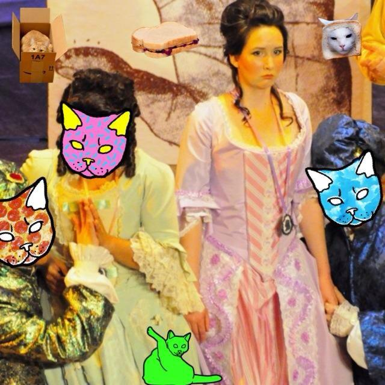

About Me
I graduated from University of Missouri with a degree in Music and a minor in Russian Studies. I am a classically trained opera singer and violinist, a sommelier-in-training, and an aspiring web developer. I will start school in the Fall at University of Missouri Kansas City. There, I hope to get a masters degree in Computer Science. Ultimately, my hope is to audition and sing professionally while working as a freelance web developer.
I originally went to school for Electrical and Computer Engineering. I ultimately changed my major to Music after difficult deliberating following my Sophomore year. I always had an inkling that I would go back to school for Computer Science.